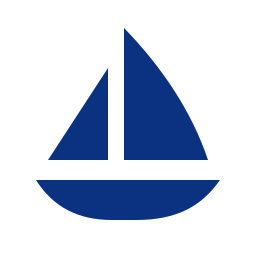
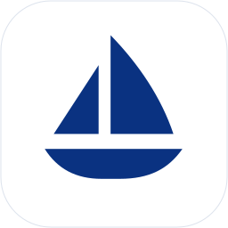

会议记录实时 / 原稿复制全文
12:06 · 陈明
今天先确认首版范围，优先保证录音和转写可靠，再完善会议中的辅助判断。
12:18 · 林悦
会中保持记录和总结同时可见。资料按本场选用，避免把不相关内容带进来。
12:29 · 陈明
下一步明确验收标准和负责人，细节放到会后继续核对。
示例原文 · 用于说明信息层级

以帆指向未来，以船身承载共识。
简洁的单色轮廓，服务安静、可靠的会议工作台。
同一轮廓，保持清楚


#0A3281#F5F7FB#FFFFFF#EAF0FB#172033#DDE3ED今天先确认首版范围，优先保证录音和转写可靠，再完善会议中的辅助判断。
会中保持记录和总结同时可见。资料按本场选用，避免把不相关内容带进来。
下一步明确验收标准和负责人，细节放到会后继续核对。
围绕首版范围、会中布局和验收责任进行确认。
仍需澄清
负责人和验收日期尚未明确。